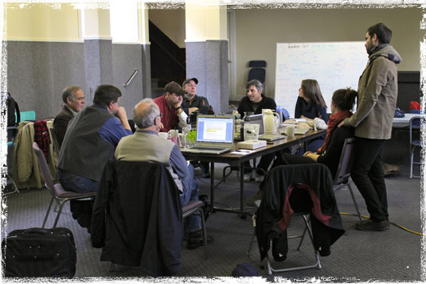
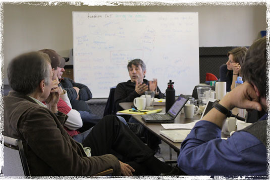

SERVE as a spiritual Eldership for YWAM Canada, PROVIDE an environment for continued and deepening relationships while FOSTERING freedom in theSpirit.
ENCOURAGE a life-style based on the YWAM Foundational Values and our heritage through teaching and discipleship.
PROMOTE and COORDINATE the growth and extension of YWAM Canada locally, provincially and nationally and FACILITATE YWAM’s Family of Ministries.
SERVE as a relational link to YWAM international.

The CLT meets 2x a year and tries to move around to various locations but typically meets once in the east and once in the west.
- Pray & have devotions (seek the Lord for YWAM Canada)
- Tackle governance issues
- Report on what is happening in YWAM, in Canada and internationally
- Develop tools for staff training
- Implement communication tools (for ex. Trumpet call - monthly prayer e-letter)
- Promote relationships (for ex. The Rendezvous in Pinawa for all YWAM Canada staff)
- Encourage one another and local leaders
- etc.

If you have a comment or question for the CLT, please contact them here!